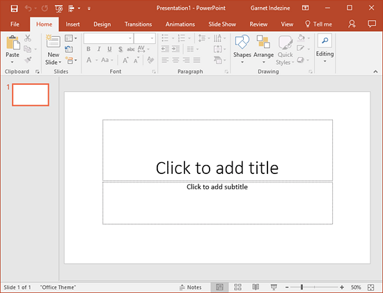
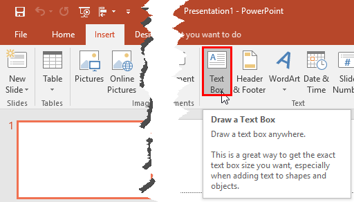
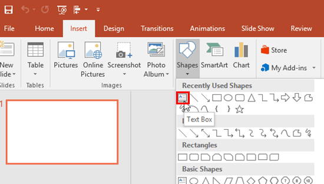
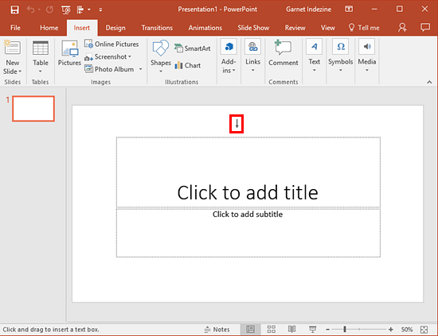
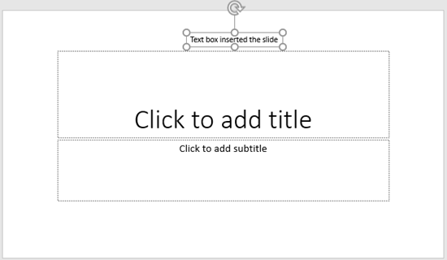

Adding New Text Boxes
In PowerPoint, there are some differences between text placeholders and text boxes. As far as formatting for text placeholders and text boxes is concerned, almost everything else does work in the same way. However, there is one more vital difference between a text placeholder and a text box:
- You cannot insert text placeholders on a slide since they are part of the layout for your slide and already exist when you insert a new slide.
- Text boxes on the other hand need to be inserted manually.
- Follow these steps to learn how you can insert a text box in PowerPoint 2016:
- Open a presentation in PowerPoint 2016. Alternatively, if you want to start from scratch, launch PowerPoint. You will see the Presentation Gallery. Here, select the Blank Presentation option to open a blank presentation with a new slide, as shown in Figure 1.
- 
Figure 1: A new presentation in PowerPoint 2016
- Select the Insert tab of the Ribbbon, and click the Text Box button (highlighted in red within Figure 2).
- 
Figure 2: Text Box button
Alternatively, you can select the Text Box option from the Shapes drop-down gallery, that you can access from either Home or Insert tab of the Ribbon, as shown highlighted in red within Figure 3.
- 
Figure 3: Text Box option within the Shapes drop-down gallery
- When you follow any of the above two options, the cursor changes into a vertical line, as shown highlighted in red within Figure 4.
- 
Figure 4: Cursor changed into a vertical line
- Now, you have two options:
- i. To create a text box which automatically enlarges as you type more text, click once where you want the text to start, and begin typing.
- ii. To create a text box with a width specified, and that automatically wraps text to the next line and grows in height, click and drag to draw a box where you want the text box to be. The height drawn may snap back to a single text line height. However it will grow in height as you type more text into it.
- Figure 5, below shows text typed within the text box. In subsequent tutorials, you will learn how you can work with text boxes, and format them. Also, a text box is just another shape in PowerPoint. So, any of the editing options used for shapes in powerpoint will work similarly when used upon text boxes.
- 
Figure 5: Text typed within the inserted text box